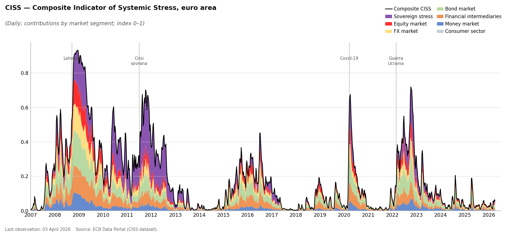
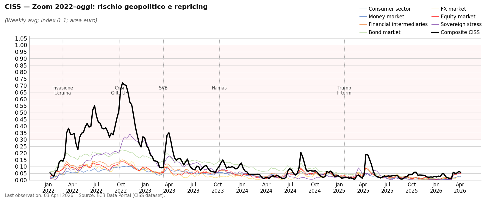
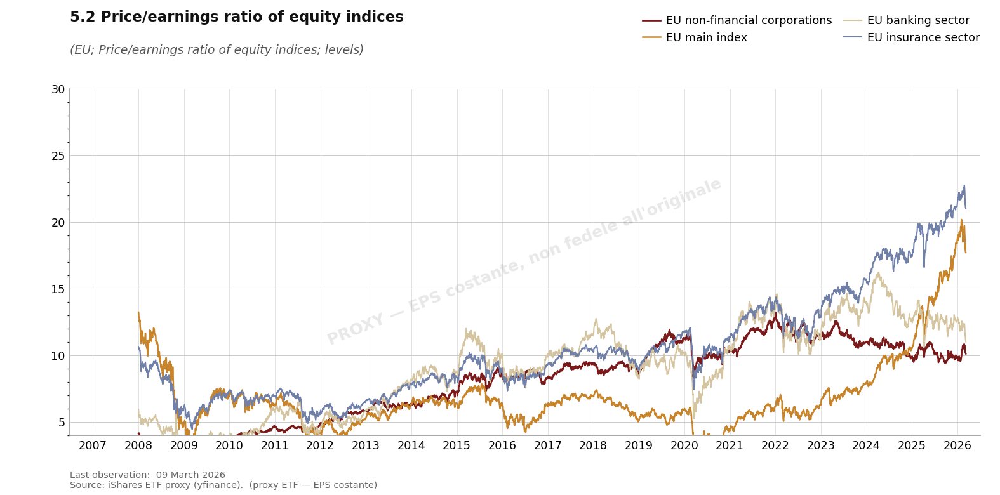

Variabili ESRB: a cosa servono
CISS, P/E e rischio sistemico europeo — guida all’uso analitico
Paolo Volterra ![]()
L’ESRB Risk Dashboard aggrega due classi di indicatori: lo stress finanziario (CISS e sottoindici) e le valutazioni di mercato (P/E azionario). Il documento spiega cosa misura ciascuna variabile, perché è rilevante per l’analisi del rischio sistemico e come le due classi si leggono in modo integrato per individuare configurazioni di vulnerabilità latente.
ESRB, CISS, rischio sistemico, P/E, stabilità finanziaria, area euro
1 Perché esistono queste variabili
L’European Systemic Risk Board ha il mandato di identificare i rischi per la stabilità finanziaria dell’UE prima che si materializzino. Il problema è che il rischio sistemico non è direttamente osservabile: lo si inferisce da segnali di mercato.
Il Dashboard ESRB combina due tipi di segnale:
| Classe | Variabile principale | Cosa cattura |
|---|---|---|
| Stress realizzato | CISS e sottoindici | Quanto stress c’è adesso nei mercati finanziari |
| Vulnerabilità latente | P/E ratio azionario | Quanto sono “stirate” le valutazioni, cioè quanto spazio c’è per una correzione |
Il punto cruciale è che le due classi possono divergere: basso stress oggi non significa basso rischio domani. È esattamente la configurazione più pericolosa — e quella attuale, come vedremo.
2 Il CISS: stress finanziario composito
2.1 Cosa misura
Il CISS (Composite Indicator of Systemic Stress) è pubblicato dalla BCE e misura il livello di stress simultaneo in cinque segmenti del sistema finanziario dell’area euro. Il valore va da 0 (nessuno stress) a 1 (stress massimo storico).
La caratteristica distintiva del CISS rispetto a un semplice indice di volatilità è che pesa i sottoindici in funzione della correlazione tra i segmenti: quando lo stress è diffuso su più mercati contemporaneamente, il CISS sale in modo più che proporzionale. È questa correlazione il cuore del rischio sistemico.

Figura 1 — CISS composito con contributo dei sottoindici (area euro, 2007–oggi). Fonte: ECB Data Portal.
2.2 I sette sottoindici
Il CISS aggrega sette segmenti. Ognuno ha un significato analitico preciso:
2.2.1 Mercato monetario (SS_MMN)
Misura la tensione nel mercato interbancario e dei pronti contro termine. È il primo segmento a stressarsi in una crisi di liquidità: il collasso di Lehman (settembre 2008) è chiaramente visibile come picco isolato.
Utile per: segnali precoce di credit crunch interbancario; monitoraggio della trasmissione della politica monetaria.
2.2.2 Intermediari finanziari (SS_FIN)
Stress nel settore bancario e assicurativo, misurato da spread CDS, volatilità azionaria delle banche e distanza dal default. Riflette la percezione del rischio di controparte.
Utile per: valutare la solidità percepita del sistema bancario; anticipare restrizioni all’offerta di credito.
2.2.3 Mercato obbligazionario (SS_BMN)
Tensione nel mercato dei titoli di Stato e corporate bond: spread, liquidità, volatilità dei rendimenti. Il picco 2011–2012 della crisi del debito sovrano è il segnale dominante.
Utile per: monitorare il rischio di frammentazione del mercato dei capitali; prezzare il rischio di rifinanziamento degli Stati.
2.2.4 Mercato valutario (SS_FXN)
Volatilità e movimenti direzionali anomali nei cambi dell’euro. Tendenzialmente più basso degli altri in regime di euro, ma si attiva in periodi di risk-off globale.
Utile per: valutare pressioni esterne e flight-to-safety transfrontalieri.
2.2.5 Mercato azionario (SS_EMN)
Volatilità realizzata e implicita degli indici azionari europei, insieme alla dispersione dei rendimenti. Cattura le correzioni di borsa ma non la sopravvalutazione.
Utile per: misurare il sentiment di mercato; non per misurare il rischio di valutazione (quello è il P/E).
2.2.6 Settore consumer (SS_CON)
Variabile meno standard: cattura lo stress percepito dalle famiglie e dalle imprese non finanziarie, tipicamente tramite indicatori di fiducia e spread sul credito al consumo.
Utile per: monitorare la trasmissione dello stress finanziario all’economia reale.
2.2.7 Stress sovrano (SOV_EWN)
Componente specifica al rischio sovrano dell’area euro: spread sui BTP, Bonos, OAT rispetto al Bund. È strutturalmente il sottoindice con il livello più alto in media, dato il problema storico del rischio di ridenominazione.
Utile per: valutare la frammentazione finanziaria nell’area euro; monitorare la sostenibilità del debito pubblico.
2.3 Come leggere il CISS: soglie orientative
| Valore CISS | Interpretazione | Esempi storici |
|---|---|---|
| < 0.10 | Calma finanziaria | 2014–2019 (pre-Covid) |
| 0.10 – 0.30 | Stress moderato | 2022–2023 post-guerra |
| 0.30 – 0.50 | Stress elevato | Covid marzo 2020 |
| > 0.50 | Stress sistemico | Lehman 2008, crisi sovrana 2011 |

Figura 2 — CISS dal 2022: lo stress è sceso da picchi elevati a livelli contenuti nonostante il contesto geopolitico. Fonte: ECB Data Portal.
Il grafico mostra la caduta del CISS nel 2024–2026: i mercati hanno metabolizzato guerra, SVB e rialzi BCE senza fratture sistemiche. Ma questo non significa assenza di rischio — significa assenza di stress percepito. È qui che entra il P/E.
3 Il P/E ratio: vulnerabilità latente
3.1 Cosa misura
Il rapporto prezzo/utili (P/E) è il prezzo di borsa di un indice diviso per gli utili per azione degli ultimi 12 mesi (trailing P/E). Misura quanto gli investitori sono disposti a pagare per un euro di utili.
Non misura lo stress attuale. Misura le aspettative implicite nei prezzi: un P/E alto significa che il mercato si aspetta crescita degli utili, inflazione bassa, tassi contenuti e stabilità macro. È una misura del margine di sicurezza: quanto spazio c’è prima che le aspettative vengano deluse.

Figura 3 — P/E proxy ETF iShares (2008–2026). I valori assoluti non sono fedeli all’originale LSEG, ma la direzione è indicativa.
3.2 Le quattro serie e perché sono diverse
| Serie ESRB | Cosa rappresenta | P/E tipico | Perché differisce |
|---|---|---|---|
| EU non-financial corporations | Indice STOXX600 escluso finanziario | 18–22 | Include tech, industriali, farmaceutici — alta crescita attesa |
| EU main index | STOXX Europe 600 | 14–18 | Media ponderata di tutti i settori |
| EU banking sector | STOXX Eur 600 Banks | 7–12 | Le banche trattano strutturalmente a sconto: rischio regolatorio, ciclo creditizio, opacità del bilancio |
| EU insurance sector | STOXX Eur 600 Insurance | 10–14 | Settore difensivo, P/E intermedio |
Il basso P/E delle banche non è necessariamente un segnale di economicità: riflette il fatto che il mercato incorpora una probabilità di perdite future (crediti deteriorati, rischio di credito, rischio duration) che deprime il denominatore atteso. Quando il P/E bancario scende ulteriormente durante una crisi, il mercato sta prezzando un deterioramento degli utili futuri, non solo volatilità.
4 Come si leggono insieme
4.1 Il framework in tre blocchi
La combinazione CISS + P/E consente di classificare il contesto in quattro quadranti:
P/E BASSO P/E ALTO
(valutazioni (valutazioni
compresse) stirate)
┌──────────────┬──────────────────┐
CISS ALTO │ CRISI IN │ REPRICING IN │
(stress │ CORSO │ CORSO │
elevato) │ (2008–2009, │ (raro: shock │
│ 2011–2012) │ esogeno rapido) │
├──────────────┼──────────────────┤
CISS BASSO │ NORMALITÀ │ VULNERABILITÀ │
(mercati │ FINANZIARIA│ LATENTE ◄─── │
calmi) │ (2014–2016) │ OGGI │
└──────────────┴──────────────────┘La configurazione più insidiosa è il quadrante in basso a destra: mercati calmi, ma valutazioni alte. È il setup da sudden repricing — la correzione non si accumula gradualmente, arriva quando uno shock cambia le aspettative.
4.2 Il canale di trasmissione
Un shock persistente (es. geopolitico → energetico) si trasmette così:
Shock geopolitico
│
▼
Energia più volatile → Margini compressi per imprese energy-intensive
│
▼
Inflazione più rigida → Politica monetaria meno accomodante
│
▼
Tassi in salita → Compressione multipli P/E (il denominatore "paga" di più)
│
▼
Correzione azionaria → Peggioramento collateral, wealth effect negativo
│
▼
PD implicite in aumento → Deterioramento qualità del credito
│
▼
NPL (con lag 12–18 mesi) → Rischio per portafogli bancariIl CISS cattura la parte terminale di questo processo (quando lo stress è già nei mercati). Il P/E cattura la vulnerabilità iniziale: quanto più le valutazioni sono alte, tanto più violenta sarà la correzione quando il canale si attiva.
4.3 La lettura attuale (marzo 2026)
| Indicatore | Valore | Segnale |
|---|---|---|
| CISS composito | ~0.06 | ✅ Basso — mercati calmi |
| Stress sovrano | ~0.05 | ✅ Basso — spread contenuti |
| Stress equity | ~0.05 | ✅ Basso — volatilità contenuta |
| P/E non-financial | ~22 | ⚠️ Elevato — vicino ai massimi 2021 |
| P/E banking | ~10 | ⚠️ Basso strutturale — margine ridotto |
Sintesi: il rischio non è nei bilanci bancari né nei mercati finanziari oggi. È nelle aspettative implicite nei prezzi. Un P/E a 22 sul non-financial sconta crescita degli utili, disinflazione ordinata e tassi stabili. Un cambio di scenario — energetico, geopolitico, monetario — non ha bisogno di essere una crisi per innescare la correzione: basta una revisione delle aspettative.
5 Implicazioni per l’analisi del credito
Per una banca, la lettura integrata di questi indicatori produce due output operativi:
1. Early warning sul ciclo del credito
Il CISS stress sugli intermediari finanziari (SS_FIN) anticipa tipicamente di 2–4 trimestri il deterioramento della qualità degli impieghi. Integrarlo con i dati BankIT (NPL, coverage ratio, erogazioni) permette di costruire un nowcasting del rischio di credito settoriale.
2. Calibrazione degli scenari di stress
Un P/E alto all’inizio dello scenario implica che lo shock si trasmette con più forza: la correzione azionaria è amplificata, il collateral si deprezza di più, il risk appetite cala. Quindi scenari avversi calibrati in periodi di P/E elevato devono avere perdite più ampie rispetto agli stessi scenari in periodi di P/E compresso.
Ultima osservazione dati: 31 marzo 2026. Fonte CISS: ECB Data Portal. Fonte P/E: proxy ETF iShares (la serie storica fedele è proprietaria LSEG).